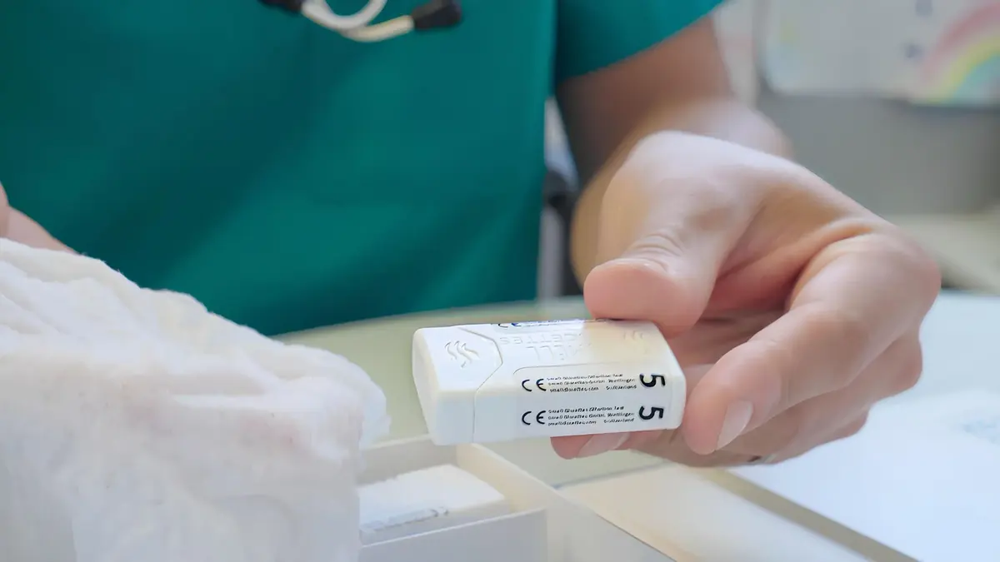

Zuverlässige olfaktorische Prüfung
Acht überschwellige Riechstoffe, identifiziert über je drei Bildantworten. Das Verfahren liefert einen reproduzierbaren Score statt einer Selbsteinschätzung.
Für medizinische FachpersonenDer Riechtest für die medizinische Beurteilung des Geruchssinns. Jede TestBox enthält acht Disketten, jede mit einem eigenen Duft. Entwickelt für Fachpersonen im Gesundheitswesen – für die sensorische Beurteilung, die präoperative Abklärung und die Verlaufskontrolle bei Erkrankungen, die den Geruchssinn beeinträchtigen.

Der Smell-Test unterstützt Fachpersonen dabei, die Riechfunktion zuverlässig zu beurteilen – als Screening, vor einem Eingriff und im Verlauf.
Acht überschwellige Riechstoffe, identifiziert über je drei Bildantworten. Das Verfahren liefert einen reproduzierbaren Score statt einer Selbsteinschätzung.
Für medizinische FachpersonenAls Hilfsmittel für die sensorische Beurteilung, für die präoperative Abklärung und für die Verlaufskontrolle bei Erkrankungen, die den Geruchssinn beeinträchtigen.
Screening vor weiterführender AbklärungDas Design der Diskette ist auf einfache Handhabung ausgelegt: aufziehen, riechen lassen, Antwort erfassen. Jede Diskette ist einzeln gekennzeichnet und eindeutig identifizierbar.
CE-gekennzeichnet, mit UDI-ID

Der Riechtest wird in einer Umverpackung geliefert. Das Set umfasst die acht verschiedenen Disketten der TestBox.
| Art-Nr. | GTIN | Bezeichnung | Bemerkung |
|---|---|---|---|
| Smell-Test | 7649988437519 | Smell-Test Set – Olfaction Test | Behandlungseinheit mit den acht verschiedenen Disketten der TestBox. |
Jede der acht Disketten trägt eine eigene Artikelnummer und eine eigene UDI-ID.
| Nr. | Art-Nr. | UDI-ID | Duft |
|---|---|---|---|
| 1 | Disc#01 | 7649988437526 | Kaffee |
| 2 | Disc#02 | 7649988437533 | Vanille |
| 3 | Disc#03 | 7649988437540 | Pfirsich |
| 4 | Disc#04 | 7649988437557 | Gras |
| 5 | Disc#05 | 7649988437564 | Ananas |
| 6 | Disc#06 | 7649988437571 | Rose |
| 7 | Disc#07 | 7649988437588 | Schokolade |
| 8 | Disc#08 | 7649988437595 | Fisch |
Lieferform: Der Riechtest wird in einer Umverpackung geliefert.
Die Produkte des Smell Discettes Olfaction Test sind über Vertriebspartner innerhalb der EU erhältlich. Für Fragen erreichen Sie uns jederzeit direkt.
Wählen Sie Ihr Land, um den zuständigen Vertriebspartner zu finden.
Sie möchten Smell Discettes in Ihrem Markt vertreiben? Bewerben Sie sich als Vertriebspartner oder schreiben Sie uns über das Kontaktformular.
Fragen? Schreiben Sie uns an info@smelldiscettes.ch oder nutzen Sie das Kontaktformular.
Smell Discettes wurde vor über 25 Jahren entwickelt und 2025 neu aufgelegt. Auf der Seite «Über uns» finden Sie die Entstehungsgeschichte, das Team hinter dem Produkt und die wissenschaftlichen Publikationen.